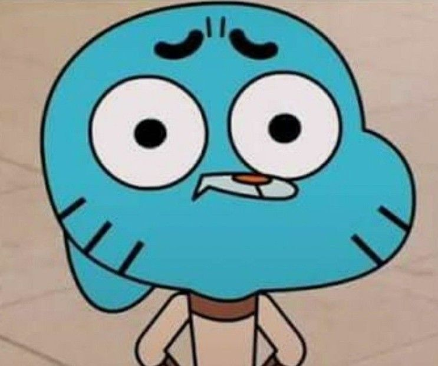

Sinopse:
Aventuras de um gato com propensão para se meter
em encrencas, mas parece não aprender a lição. Seu melhor amigo é
o peixe Darwin. Anais, sua irmã mais jovem, é o membro mais inteligente
da família. Já sua mãe trabalha enquanto o pai assiste a TV.
Autor: Ben Bocquelet
Primero Episódio: 3 de maio de 2011
Adaptações: nenhum
Gêneros: Fantasia, Animação
| Temporada | Episódios |
| Temporada 1 | |
| Temporada 2 | |
| Temporada 3 | |
| Temporada 4 | |
| Temporada 5 | |
| Temporada 6 |
